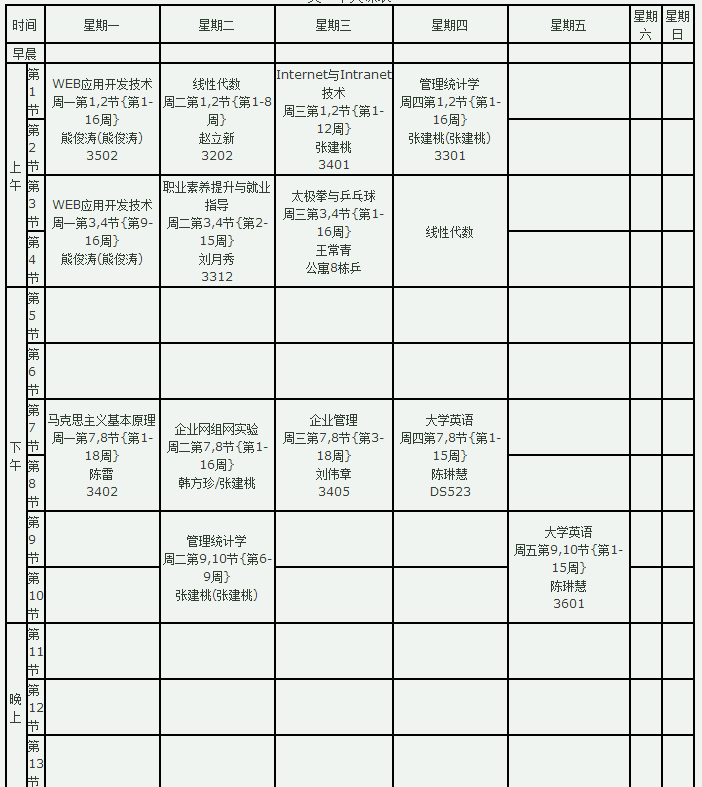

| 时间 | 星期一 | 星期二 | 星期三 | 星期四 | 星期五 | 星期六 | 星期日 | |
| 早晨 | ||||||||
| 上午 | 第 1 节 |
WEB应用开发技术 周一第1,2节{第1-16周} 熊俊涛(熊俊涛) 3502 |
线性代数 周二第1,2节{第1-8周} 赵立新 3202 |
Internet与Intranet技术 周三第1,2节{第1-12周} 张建桃 3401 |
管理统计学 周四第1,2节{第1-16周} 张建桃(张建桃) 3301 |
|||
| 第 2 节 |
||||||||
| 第 3 节 |
WEB应用开发技术 周一第3,4节{第9-16周} 熊俊涛(熊俊涛) |
职业素养提升与就业指导 周二第3,4节{第2-15周} 刘月秀 3312 |
太极拳与乒乓球 周三第3,4节{第1-16周} 王常青 公寓8栋乒 |
线性代数 | ||||
| 第 4 节 |
||||||||
| 下午 | 第 5 节 |
第 6 节 |
第 7 节 |
马克思主义基本原理 周一第7,8节{第1-18周} 陈雷 3402 |
企业网组网实验 周二第7,8节{第1-16周} 韩方珍/张建桃 |
企业管理 周三第7,8节{第3-18周} 刘伟章 3405 |
大学英语 周四第7,8节{第1-15周} 陈琳慧 DS523 |
|
| 第 8 节 |
||||||||
| 第 9 节 |
管理统计学 周二第9,10节{第6-9周} 张建桃(张建桃) | 大学英语 周五第9,10节{第1-15周} 陈琳慧 3601 | ||||||
| 第 10 节 |
||||||||
| 晚上 | 第 11 节 |
|||||||
| 第 12 节 |
||||||||
| 第 13 节 |
||||||||